Hi, thanks for visiting my site.
I'm looking for my first student job in the world of Software development. I am a second year Computer Science student at Riechman University (IDC) Herzliya, a team - player with past experience in project management. familiar with Java, C and Python. Bring with me lots of motivation to learn and develop! I would be happy to pass my CV to the relevant ones.
Education
Second year student for Computer Sience at Riechman university.Employment
Looking for my first student job in the world of software development.Volunteering
National Service - Volunteered in a rehabilitation village for drug and alcohol victims.

Water-polo
As a child i experienced 10 years of high training discipline, teamwork, achievement and striving for victory.CAMPING
I love camping out in the nature. My dream is to live one year in a motorhome.

Scuba-Diving
Darling it's better, Down where it's wetter, Take it from me!
(The Little Mermaid, Walt Disney)